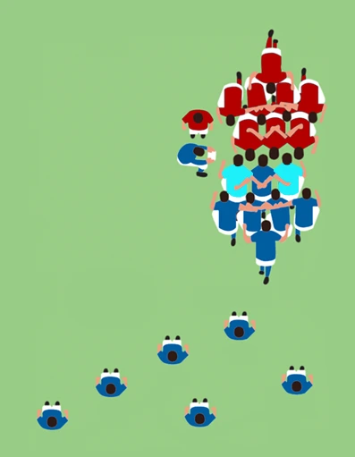
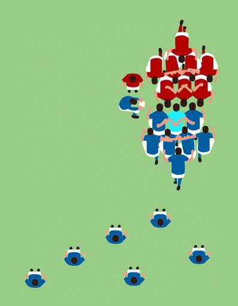
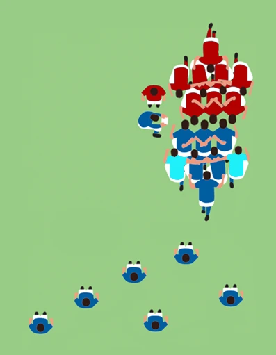
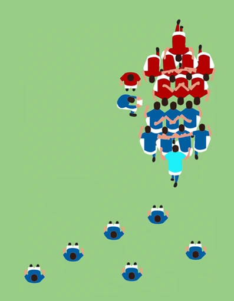
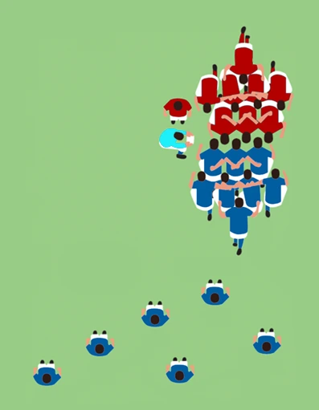
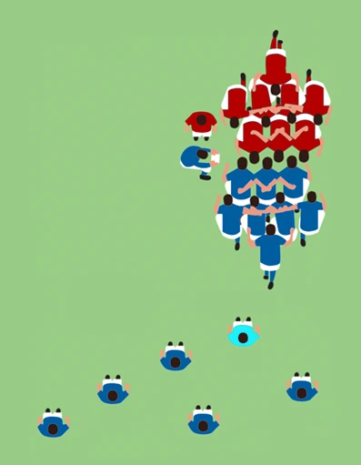
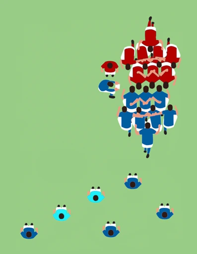
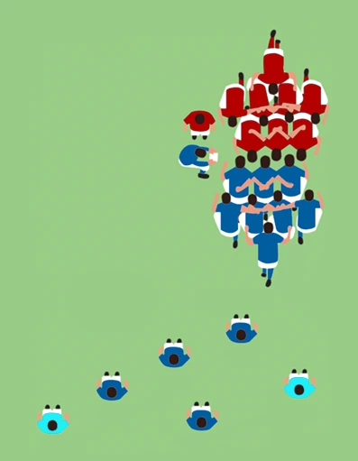
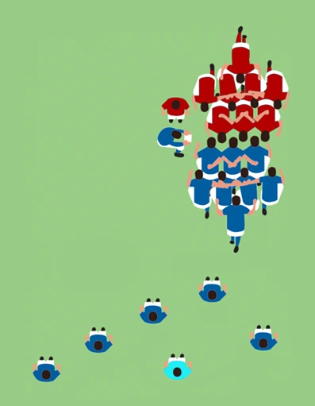

Positions Hero Image
Find your position
The forward pack
The 'Forward Pack' (numbered 1 - 8) comprise the backbone of a rugby union team, responsible for winning possession through scrums, lineouts and rucks, as well as playing a pivotal role in defensive formations. The naturally stronger and more powerful players, forwards excel in physicality, tackling and gaining territory.
-

The 'Loosehead Prop' (number 1) and 'Tighthead Prop' (number 3), are the foundations on which a scrum is built. Usually the most powerful players on the pitch, with the pressure of the remaining forwards on their backs and necks, their primary responsibility is to provide stability and strength to anchor the scrum and drive it forwards.
The tighthead is the cornerstone of the scrum, with the aim of pinning down the opposite loosehead prop and overpowering their pack. While the loosehead is tasked with trying to get under the opposite tighthead prop and drive them upwards. Scrums are a battle between opposing props and are won or lost on their backs.
-

The 'Hooker' (number 2) is the last, but not least, member of the 'Front Row', positioned between the two props. As per their name, their primary role during scrums is to hook the ball back using their feet once it is fed into the scrum by the scrum-half. This action requires precise timing and technique to ensure possession of the ball or to potentially steal it from the opposition.
The hooker plays a vital role during lineouts, as it is their job to accurately and fairly throw the ball to the best place for their team to catch it. Hookers typically provide leadership and communication among the forward pack, sometimes deciding the strategies used to win these set pieces.
-
The 'Locks' (numbers 4 & 5), also known as the 'Second Row', are key players within the forward pack. While they provide additional power and stability to the scrums, they are instrumental to winning possession during lineouts. As the tallest players on the pitch, locks are the primary target for lineout throws due to their height and jumping ability. They need to have dynamic and accurate technique combined with pinpoint timing to execute the lineouts properly, or risk giving the opposition the chance to steal possession.
As the largest players on the pitch, locks also play a key role in open play, expected to be proficient ball carriers and use their size and strength to make hard yards and gain territory; as well as being aggressive tacklers and enforcers during defensive plays.
-

The 'Blindside Flanker' (number 6) and 'Openside Flanker' (number 7) play a critical role in securing possession and ensuring the opposition cannot breach the defensive line. Generally speaking, the flankers are the fastest forwards in the team and are tasked with protecting the ball when their teammates are tackled and ensuring that the opposition do not gain possession. Usually more physical players that enjoy confrontation, flankers are great at punching holes in defences and creating gaps for the backs during open play. Defensively, flankers are expected to have the highest tackle rate in the team.
The two flankers do not usually bind to the scrum in a fixed position, instead the openside flanker attaches to whichever side is further from the touchline or closer to the more open pitch, with the blindside flanker attaching to the opposite side. Rather than providing power to the scrums, the flankers role is to watch and stop any move by their opponents to make quick plays between the scrum and the back line.
In lineouts, flankers need to be able to lift the locks up to a catching position, while also being a third option for catching if required. Flankers use their speed to move around the line and confuse the opposition, while also being ready to tackle any players that emerge from the lineout with the ball.
-

The 'Number 8', sometimes referred to as the '8-man', is one half of the link between the forwards and the backs. Due to the demanding nature of the role, they must be mentally alert, able to anticipate plays and effectively communicate, as well as having a high level of fitness and endurance to keep up with every play.
Binding at the back of the scrum, the number 8 is expected to use their weight behind the locks to drive the pack forward. While they need to watch the opposition during defensive scrums, their main role is on the offence, as they are the only player from the forwards allowed to pick the ball up from the end of the scrum, deciding between keeping the ball in the scrum, allowing the scrum-half to pick it up and pass it away, or just running it into contact themselves.
Number 8s also provide an additional jumping or lifting option during lineouts, while also reading the opposition's movements and quickly adjusting to support their team. In open play, they are key defensive players, expected to have the second highest tackle rate in the team.
The back line
The 'Back Line' (numbered 9 - 15) are the metaphorical scalpel to the forwards blunt force, playing a critical role in attack and defence. Often characterised by their speed, agility and skill handling of the ball, backs are responsible for exploiting space, creating scoring opportunities and launching counterattacks.
-

The 'Scrum-half' (number 9) is the other half of the link between the forwards and the backs, and usually the best passer on the team. Their primary responsibility lies in orchestrating the team's attack by distributing the ball quickly and accurately from the ruck or set-piece, sometimes even passing straight from the floor. This means that a scrum-half needs to make rapid decisions about where to pass it next, often assessing the field's situation to exploit any defensive weaknesses or create scoring opportunities. The scrum-half is also responsible for accurately feeding the ball into scrums.
The scrum-half is also integral to defensive strategies, watching for potential gaps that the opposition could exploit and organising players accordingly. This means that while they are small and quick, a scrum-half will typically have great tackling technique to stop anyone that may slip through the defensive line.
-

The 'Fly-half' (number 10) is often regarded as the playmaker of the team and most influential player on the pitch, responsible for directing the team's attack by making tactical decisions and executing various kicking and passing strategies within the back line. They must be cool under pressure and make quick plays, or risk being targeted by opposition players hoping to gain possession. Playing as a fly-half is incredibly tricky, as the entire team is reliant on them to not only make the right decision in each moment, but to execute their skill precisely and consistently.
On top of all this, the fly-half is also responsible for kicking penalties, conversions and drop-goals. This means they must be a consistently accurate kicker, even while being charged by their opponents.
-

The 'Inside Centre' (number 12) and 'Outside Centre' (number 13) are the versatile and agile players that execute the plays made by the fly-half, commonly regarded as the team's main workhorses. Possessing a combination of speed, strength and skill, centres use intricate running lines and deceptive footwork to outmanoeuvre their opposition and break through the defensive line. A centre will have a particularly good eye for exposing gaps and are some of the most adaptable players on the pitch.
The inside centre is usually the more creative of the two and will often be almost as good at passing and kicking as the fly-half. While the outside centre will be the faster of the two, with more elusive footwork and a keen ability to improvise on the spot.
-

The 'Left Wing' (number 11) and 'Right Wing' (number 14) are tricky speedsters who statistically score three times as many tries as any other position. Fast and nimble, they are positioned on either edge of the pitch and are important players in both attack and defence. Offensively, wingers are responsible for hunting down kicks, evading opposition defenders and scoring game-winning tries. They frequently employ sidesteps, swerves, and rapid acceleration to evade tackles and break through defensive lines. Wingers are skilled in making low kicks, such as chips and grubbers, and catching high balls, which they often do mid-air and surrounded by opposition players.
Wingers also play an essential role defensively, responsible for preventing opposition wingers and centres from gaining ground, often tackling players into touch and triggering a lineout. They will often use their catching skills to receive oncoming kicks and trigger a counter-attack within rapid succession.
-

The 'Full-back' (number 15) is the last line of defence, often standing further away from the rest of the back line and watching over the entire pitch. They are highly-skilled players in all aspects of the game and are responsible for marshalling a large area of the field. Defensively, full-backs are great communicators, informing their teammates about emerging threats and if opposition players break through the lines, they will have to act as the hero of the team and make many of the try-saving tackles.
Similar to the wingers, a full-back will receive many of the opposition's kicks, both high and low, and are then responsible for choosing to either run the ball forward or kick it back, which can be some of the longest kicks in a rugby game.